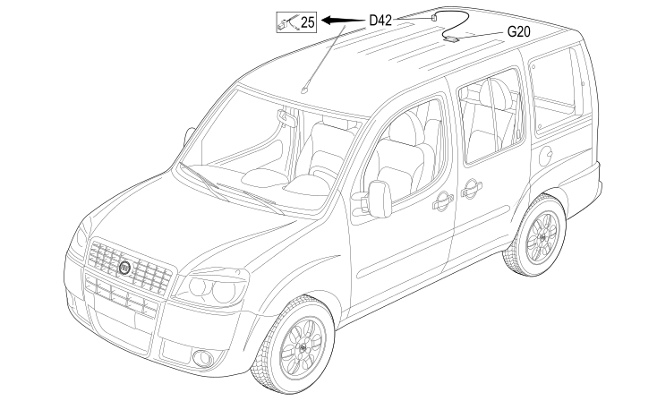

90 BRIDGE ON ROOF
- Path
- Electrical equipment > 2 WIRING > 90 BRIDGE ON ROOF
- Kind
- wiring harness
- Applies to
- engines: 1.4 8v, 1.6 16v, 1.3 JTD 16V, 1.9 JTD 8V; production: da 12/03; only with equipment: Doblò trim level and MY 2005
- Interactive page
- https://sloeber94.github.io/elrnDB-fDbl/en/#/223004207
Applies to: engines: 1.4 8v, 1.6 16v, 1.3 JTD 16V, 1.9 JTD 8V; production: da 12/03; only with equipment: Doblò trim level and MY 2005
